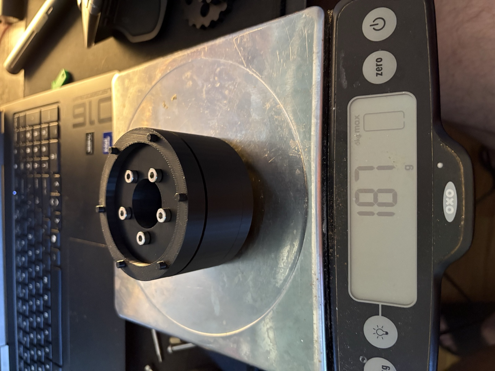
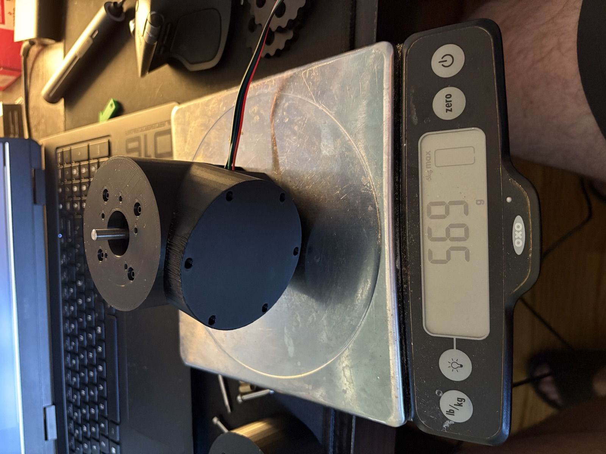
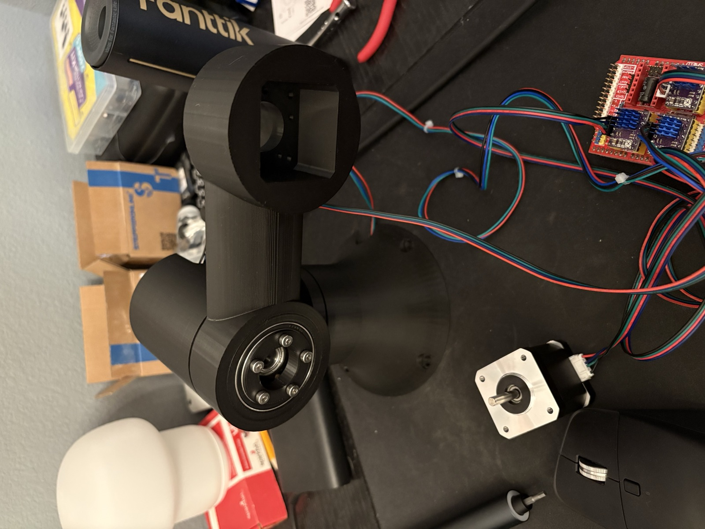
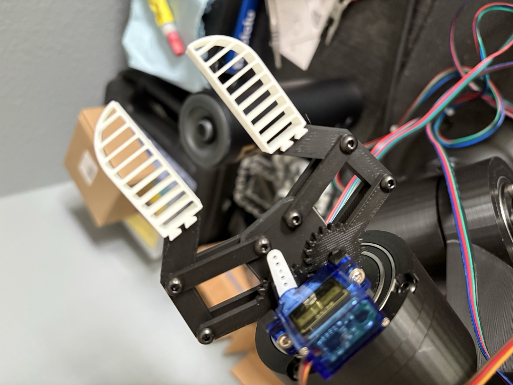
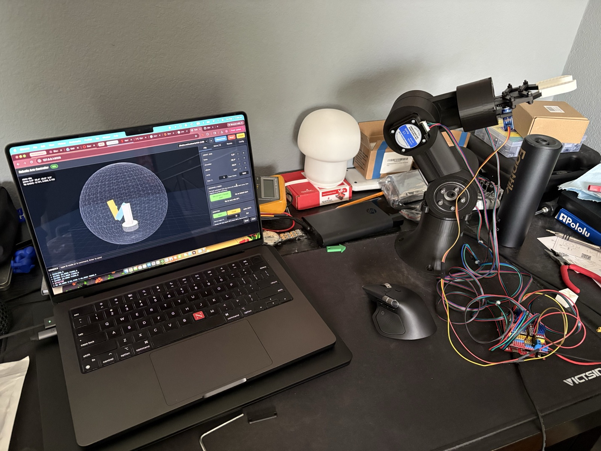
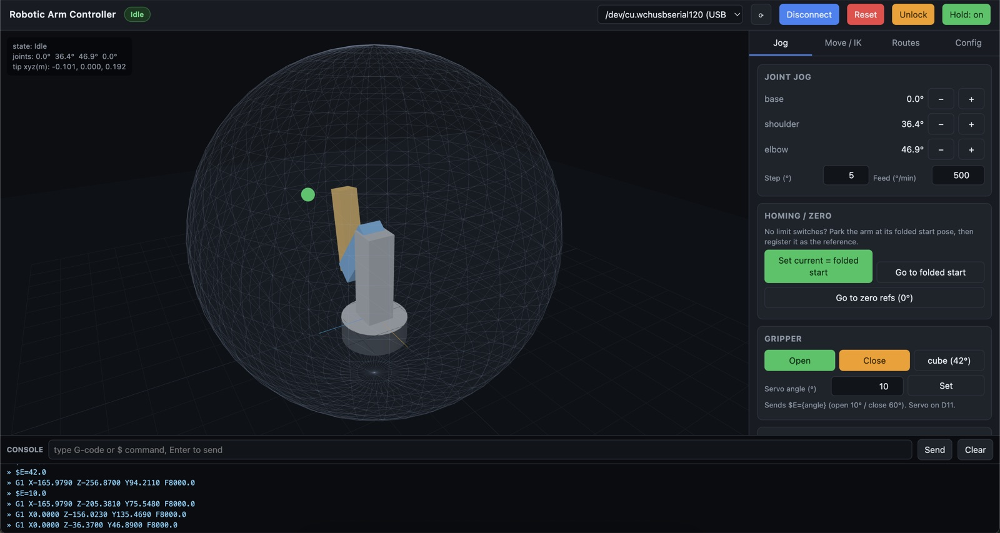
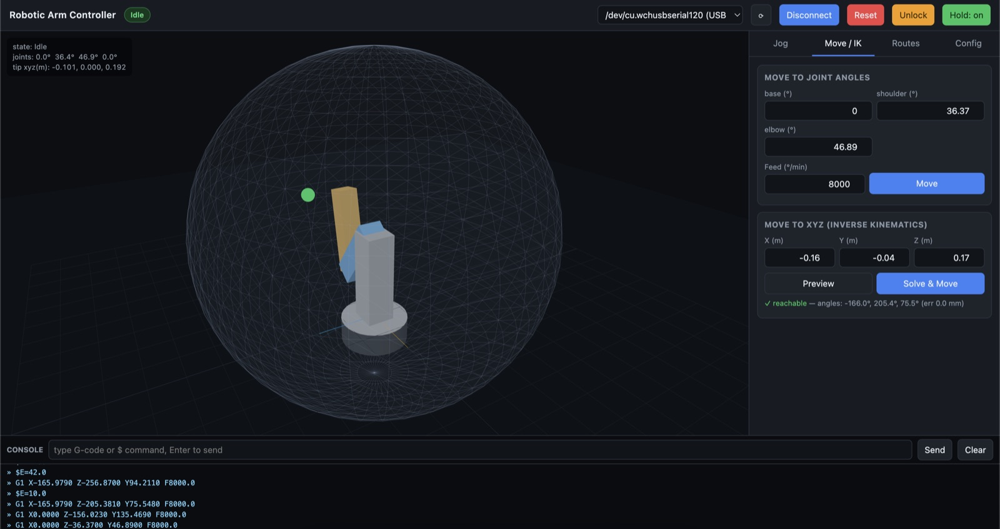
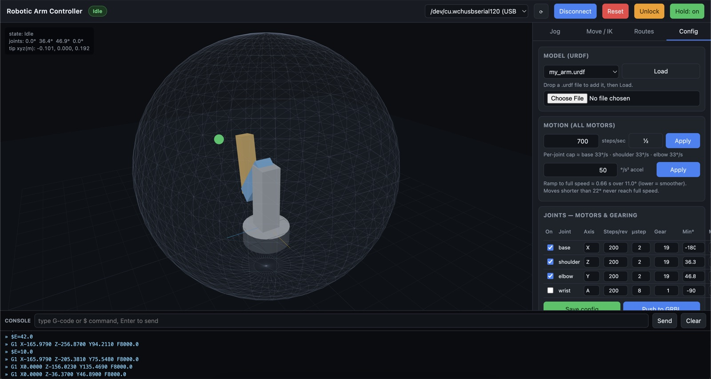

- 270 mmReach
- ~500 gPayload
- ~1 mmRepeatability
- < $200Total cost
The arm running a recorded pick-and-place route from the controller.
Overview
I wanted to build an arm that behaves like a real industrial robot while staying cheap and printable at home. The main design problem was getting enough torque and stiffness out of hobby-grade NEMA 17 steppers without adding backlash. I solved it by designing my own cycloidal reducers and building each joint as its own actuator.
Tools: SolidWorks, NEMA 17 steppers, GRBL and G-code, C++, FDM 3D printing
Mechanical design
- Cycloidal reducers: I designed cycloidal gearboxes for the NEMA 17 steppers to get a high reduction ratio with very little backlash. The joints can still be backdriven by hand.
- Modular actuators: The base and shoulder joints are self-contained, bearing-supported modules that bolt together. I weighed each module during the build to keep the arm's mass in check.
- Compliant gripper: A servo drives a geared parallel-linkage gripper. Its flexible ribbed fingers conform to the object for a secure grip.
- Fully 3D-printed structure: All structural parts were designed in CAD and printed, which kept the total cost under $200.






Controls and software
- Firmware: The arm runs GRBL on an Arduino with a CNC shield and stepper drivers. I modified the firmware so the gripper servo is controlled by the same command stream as the steppers.
- Inverse kinematics: I implemented IK so I can command the arm to a target XYZ position. The solver checks whether the point is reachable before it moves the arm.
- Custom controller: I wrote a browser app that connects to the arm over USB serial.
It shows a live 3D model of the arm and has these tabs:
- Jog: move each joint, set the homing position, and open or close the gripper
- Move / IK: go to specific joint angles or solve for an XYZ target
- Routes: save waypoints with gripper actions, then play back a pick-and-place route
- Config: load a URDF model and set speed, acceleration, and gearing for each joint
Programming a route in the controller and playing it back.


